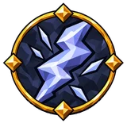
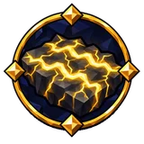
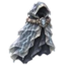
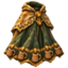

Урон молнией¶
Стихийный урон: его удары копят на цели проводимость и могут её шокировать. Шокированная цель несколько секунд получает больше урона и быстрее копит оглушение.
Как это работает¶
Весь увеличенный и уменьшенный урон, действующий на удар, складывается в одну сумму, и удар один раз умножается на 1 + эту сумму: общий урон, урон вида вашего оружия, ближнего боя, дальнего боя или заклинаний, атак, альтернативных атак, ударов не снарядами, бонус атаки с разбега и увеличения, зависящие от врага (ниже).
Попадания скипетра считаются тем видом атаки, которым они являются: его заклинания получают увеличения урона заклинаний, остальные атаки — ближнего или дальнего боя.
Смайт скипетра также получает ваши увеличения урона по области и плоский урон по области.
Каждый тип урона добавляет к сумме свои увеличения, только для себя: огонь, холод и молния — ещё и увеличения стихийного урона, режущий, колющий и дробящий — увеличения физического урона. Поэтому +50% урона и +50% урона огнём дают урону огнём × 2, а не × 2,25.
Снаряды: увеличения урона снарядов тоже входят в сумму, вместе с увеличениями скорости снарядов, которые ваши характеристики превращают в урон; так же и увеличения урона факела (факел).
Луки и арбалеты делят каждый выстрел на две части. Доля боеприпаса — его урон ÷ (урон оружия + урон боеприпаса), без рубящего и добывающего урона у обоих. Эта часть берёт сумму без увеличений урона лука или арбалета, но с вашими увеличениями урона снарядов (включая снаряды лука или арбалета) и увеличениями её типа урона для выстрелов из лука или арбалета (как у колчана); часть оружия берёт сумму как есть, без них.
Рубка и добыча: увеличения против деревьев, руды и ресурсов входят в ту же сумму, поэтому и плоский урон по ним растёт со всей суммой.
Все шаги удара по порядку: Порядок удара.
Вместе с другими механиками: Бой и строительство.
Ссылаются¶
Дерево навыков¶
Средние узлы¶
| Название | Эффект | |
|---|---|---|
 |
Белая вспышка | 37,5% увеличение урона от молнии при критическом попадании недавно |
| Громовой след | 15% увеличение урона от молнии 40% увеличение накопления шока |
|
| Копьё грозы | +12% пробивания сопротивлений от молнии | |
 |
Ложе бури | 10% увеличение области действия эффектов от молнии эффектами земли 7,5% увеличение скорости каста на заряженной земле Заклинания создают землю при попадании в поверхность при нанесении урона типа «молния» |
| Остаточное напряжение | +5% damage over time multiplier от молнии | |
| Остаточный ток | +5% damage over time multiplier от молнии | |
| Разряд над болотом | 20% увеличение урона от молнии против мокрых целей | |
| Рука громовержца | 15% увеличение урона от молнии |
Малые узлы¶
| Характеристика | Узлы |
|---|---|
| 6% увеличение урона от молнии | 9 |
| 8% увеличение урона от молнии эффектами земли | 4 |
| +2% damage over time multiplier от молнии | 4 |
| 8% увеличение урона от молнии против мокрых целей | 4 |
| +3% resistance от молнии | 3 |
| +4% пробивания сопротивлений от молнии | 3 |
| 4% увеличение области действия эффектов от молнии эффектами земли | 1 |
Предметы¶
Уникальные предметы (3)¶
| Название | Эффект | Как получить | |
|---|---|---|---|
 |
Изнанка грозы | −1 с к задержке восстановления рунного щита промокшим (30–50)% увеличение восстановления рунного щита промокшим ×0,8 resistance от холода +(15–25)% resistance от молнии (20–30)% увеличение регенерации эйтра промокшим |
выпадает где угодно с биома «Туманные земли» (уровень предмета 130) |
| Посох нижнего неба | 10% накопления шока от ваших попаданий применяется и к вам (8–12)% увеличение урона от молнии за каждые 10% шока на вас Влажность не снижает ваше сопротивление урону типа «молния» (30–50)% увеличение накопления шока против мокрых целей (20–30)% увеличение длительности шока (20–30)% увеличение радиус присутствия |
выпадает в событиях рунных монолитов (кроме осквернённых): с их защитников и с шансом 5% за победу в событии; в зале «Зал трёх монолитов» на карте чертогов (5% за каждое выигранное испытание) | |
 |
Скатерть без стола | Восстанавливает (10–15)% от максимума выносливости при окончании эффекта медовухи (20–30)% увеличение consumed mead duration +2% resistance от огня за каждый: активного эффекта медовухи (до 5), +2% resistance от холода за каждый: активного эффекта медовухи (до 5), +2% resistance от молнии за каждый: активного эффекта медовухи (до 5) (10–15)% увеличение consumed mead effect +(10–15)% resistance от яда |
выпадает где угодно с биома «Черный лес» (уровень предмета 19) |
Свойства (32)
| Свойство | Тип | Выпадает на | С уровня предмета |
|---|---|---|---|
| #% увеличение области действия эффектов от молнии эффектами земли | Суффикс | должен быть: оружие; одно из: магия крови, магия стихий or скипетр | Луга (1) |
| #% увеличение области действия эффектов от молнии эффектами земли | Суффикс | должен быть: самоцвет and самоцвет Интеллекта | Луга (1) |
| #% увеличение урона от молнии | Префикс | должен быть: кольцо | Луга (1) |
| #% увеличение урона от молнии | Префикс | должен быть: оружие; одно из: магия крови, магия стихий or скипетр | Луга (1) |
| #% увеличение урона от молнии | Префикс | должен быть: самоцвет and самоцвет Интеллекта | Луга (1) |
| #% увеличение урона от молнии при критическом попадании недавно | Префикс | должен быть: оружие; одно из: магия крови, магия стихий or скипетр | Луга (1) |
| #% увеличение урона от молнии промокшим | Префикс | должен быть: оружие; одно из: магия крови, магия стихий or скипетр | Луга (1) |
| #% увеличение урона от молнии против мокрых целей | Префикс | должен быть: оружие; одно из: магия крови, магия стихий or скипетр | Луга (1) |
| #% увеличение урона от молнии против мокрых целей | Префикс | должен быть: самоцвет and самоцвет Интеллекта | Луга (1) |
| #% увеличение урона от молнии эффектами земли | Префикс | должен быть: оружие; одно из: магия крови, магия стихий or скипетр | Луга (1) |
| #% увеличение урона от молнии эффектами земли | Префикс | должен быть: самоцвет and самоцвет Интеллекта | Луга (1) |
| +#% damage over time multiplier от молнии | Суффикс | должен быть: оружие and урон молнией | Луга (1) |
| +#% damage over time multiplier от молнии | Суффикс | должен быть: самоцвет | Луга (1) |
| +#% damage over time multiplier от молнии | Суффикс | должен быть: кольцо | Луга (1) |
| +#% damage over time multiplier от молнии | Суффикс | должен быть: броня; одно из: на основе рунного щита | Луга (1) |
| +#% damage over time multiplier от молнии | Суффикс | должен быть: самоцвет and самоцвет Интеллекта | Луга (1) |
| +#% damage over time multiplier от молнии | Суффикс | должен быть: самоцвет and самоцвет Силы и Интеллекта | Луга (1) |
| +#% resistance от молнии | Суффикс | должен быть: тринкет | Луга (1) |
| +#% resistance от молнии | Суффикс | должен быть: кольцо | Луга (1) |
| +#% resistance от молнии | Суффикс | должен быть: броня; одно из: на основе уклонения or на основе рунного щита | Луга (1) |
| +#% resistance от молнии | Суффикс | должен быть: щит; одно из: на основе уклонения or на основе рунного щита | Луга (1) |
| +#% resistance от молнии | Суффикс | должен быть: самоцвет and самоцвет Интеллекта | Луга (1) |
| +#% пробивания сопротивлений от молнии | Суффикс | должен быть: оружие | Луга (1) |
| +#% пробивания сопротивлений от молнии | Суффикс | должен быть: кольцо | Луга (1) |
| +#% пробивания сопротивлений от молнии | Суффикс | должен быть: броня; одно из: на основе рунного щита | Луга (1) |
| +#% пробивания сопротивлений от молнии | Суффикс | должен быть: самоцвет and самоцвет Интеллекта | Луга (1) |
| #% получаемого урона типа «физический» засчитывается как урон типа «молния» | Суффикс | должен быть: броня and нагрудник | только зачарование у стола рунограна |
| #% полученного урона типа «молния» восстанавливается как здоровье за # с | Суффикс | должен быть: украшение | только зачарование у стола рунограна |
| #% увеличение урона от молнии за каждые #% шока на вас | Префикс | не самоцвет | Только на уникальных предметах: Посох нижнего неба |
| +#% resistance от молнии | Суффикс | не самоцвет | Только на уникальных предметах: Изнанка грозы |
| +#% resistance от огня за каждый: активного эффекта медовухи (до #), +#% resistance от холода за каждый: активного эффекта медовухи (до #), +#% resistance от молнии за каждый: активного эффекта медовухи (до #) | Суффикс | не самоцвет | Только на уникальных предметах: Скатерть без стола |
| Влажность не снижает ваше сопротивление урону типа «молния» | Суффикс | не самоцвет | Только на уникальных предметах: Посох нижнего неба |
Упоминается в¶
История патчей¶
| Патч | Изменение |
|---|---|
| Патч 6.0.0 | Стихийный урон |
| Патч 5.3.0 | Стихийный урон, заполняющий шкалу шока. |
Данные из Path of Valheiman 6.0.12, извлечены 2026-11-13.